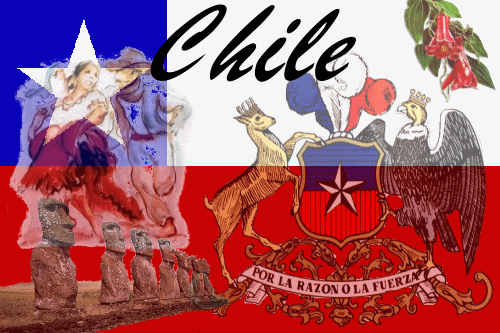

Las danzas nortinas tienen características notorias que se observan en las vestidas y se palpan en la música. No hay
diferencias marcadas entre un altiplánico de Argentina, Perú, o chile. en general, los bailes y danzas de la zona norte de
Chile se caracteriza por su origen religioso y festivo.
La cueca
La cueca es un baile de parejas sueltas, en el que se representa el asedio amoroso de un hombre por una mujer. Los bailarines, que llevan un pañuelo en la mano derecha, trazan figuras circulares, con vueltas y medias vueltas, interrumpidas por diversos floreos.
Tipos de cueca

Volver al Menu